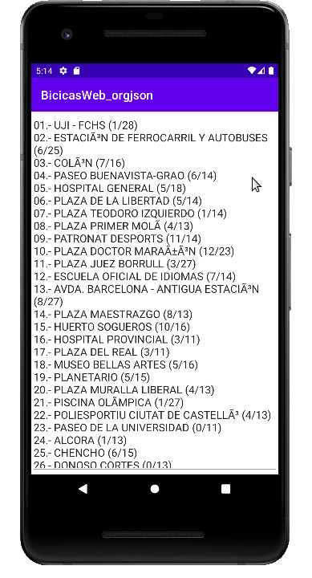

1.2 - Fitxers JSON
Com havíem vist en el Tema 3, 2 són les maneres que hem vist d'accedir a JSON, amb un driver molt senzillet anomenat org.json, i amb un driver molt més complicat que ens permetia fer un mapatge entre el fitxer json i classes de Kotlin (realment de Java). Mirem les 2 maneres per a un mateix exemple, el de Bicicas
Driver org.json
Està incorporat en Android, és d'utilització immediata. Tot el que havíem fet en el Tema 3 ens servirà ací també, sense més variació.
Farem l'exemple sobre un projecte nou d'Android, que podem anomenar Bicicas_Web_orgjson (indicant així que agafarem les dades directament des de la pàgina web de Bicicas, i que utilitzarem el driver org.json, incorporat per defecte en Android).
Tal i com indica el nom, el farem un poc més complicat per a que no siga tan immediat. En compte d'agafar un fitxer (que potser l'hauríem de col·locar directament al dispositiu...) anem a accedir directament a la pàgina de Bicicas. Tindrem la complicació afegida de que haurem de donar permisos d'Internet, i també permetre que la informació ens arribe en text clar, ja que a partir de Android 9 (API level 28), no està permesa per defecte.
Per tant, en el AndroidManifest.xml, afegirem les línies 3 i 6 (es posen les altres per a que quede clar el lloc on van)
<?xml version="1.0" encoding="utf-8"?>
<manifest ...>
<uses-permission android:name="android.permission.INTERNET" />
<application
...
android:usesCleartextTraffic="true"
...>
...
</application>
</manifest>
En el activity_main.xml col·locarem un únic EditText per a visualitzar l'estat actual de Bicicas. Quedaria d'aquesta manera:
<?xml version="1.0" encoding="utf-8"?>
<androidx.constraintlayout.widget.ConstraintLayout
xmlns:android="http://schemas.android.com/apk/res/android"
xmlns:tools="http://schemas.android.com/tools"
xmlns:app="http://schemas.android.com/apk/res-auto"
android:layout_width="match_parent"
android:layout_height="match_parent"
tools:context=".MainActivity">
<EditText
android:text=""
android:id="@+id/text"
android:layout_width="match_parent"
android:layout_height="match_parent"
android:inputType="textMultiLine"
android:gravity="top" />
</androidx.constraintlayout.widget.ConstraintLayout>En el MainActivity.kt accedirem a la pàgina de Bicicas, i després farem el mateix procés que en el Tema3. La dificultat afegida ara és evidentment accedir a Internet, que a més d'haver de posar el permís en el AndroidManifest, ens impedeix accedir a Internet des del programa principal. Ho esquivem muntant un fil (thread) que s'execute en paral·lel. Des del programa principal llancem el fil, i ens esperem a que acabe. En el fil és on tenim realment l'accés a JSON. Recordem que l'estructura del JSON de Bicicas és que l'arrel és un array amb un únic element, que és un objecte amb un únic membre (anomenat ocupación) que és un array d'objectes, cadascun l'equivalent a una estació, ja parelles clau-valor:
[
{
"ocupacion":
[
{
"id": "01",
"punto": "UJI - FCHS",
"puestos": 27,
"ocupados": 9,
"latitud": "39.99533",
"longitud": "-0.06999",
"porcentajeAltaOcupacion": "80",
"porcentajeBajaOcupacion": "20"
},
...
]
}
]El MainActivity quedarà així:
import androidx.appcompat.app.AppCompatActivity
import android.os.Bundle
import kotlinx.android.synthetic.main.activity_main.*
import org.json.JSONArray
import org.json.JSONObject
import org.json.JSONTokener
import java.io.InputStreamReader
import java.net.URL
class MainActivity : AppCompatActivity() {
internal var cont: String = ""
private var webThread: Thread = object : Thread() {
override fun run() {
val adr = URL("http://gestiona.bicicas.es/apps/apps.php")
val json = InputStreamReader((adr.openConnection().getInputStream())).readText()
val arrel = JSONTokener(json).nextValue() as JSONArray
val estacions = arrel.getJSONObject(0).getJSONArray("ocupacion")
for (i in 0 until estacions.length()){
val e = estacions.get(i) as JSONObject
cont += "" + e.get("id") + ".- " + e.get("punto") + " (" + e.get("ocupados") + "/" + e.get("puestos") + ")\n"
}
}
}
override fun onCreate(savedInstanceState: Bundle?) {
super.onCreate(savedInstanceState)
setContentView(R.layout.activity_main)
// Des de la versió 3 d'Android, no es permet obrir una connexió des del thread principal.
// Per tant s'ha de crear un nou.
webThread.start()
// i ara esperem a que finalitze el thread fill unint-lo (join)
try {
webThread.join()
} catch (e: InterruptedException) {
e.printStackTrace()
}
text.setText(cont)
}
}Observeu com les línies 23 a 28 són idèntiques al programa del Tema 3, excepte que ara en compte de guardar en l'eixida estàndar, ho guardem en una variable, per a poder assignar aquesta variable en el programa principal, quan ja s'han ajuntat els dos threads.
A banda d'això, estem utilitzant la llibreria synthetic, la qual cosa ens obliga a posar dins de plugins del build.gradle de la app les extensions:
id 'kotlin-android-extensions'El resultat de l'execució seria el següent:

Driver Moshi
Respecte al que hem vist en el Tema 3 té una lleugera modificació, a banda d'haver d'integrar els drivers necessaris, que ara no estan inclosos directament.
Ho podem practicar en un projecte nou anomenat Bicicas_Web_Moshi
Per a incorporar correctament els drivers Moshi, posarem en el buid.gradle de l'aplicació les línies que estan a continuació. Aprofitem també per a incorporar les kotlin-android-extensions
plugins {
...
id 'kotlin-android-extensions'
}
...
dependencies {
implementation "com.squareup.moshi:moshi:1.12.0"
implementation "com.squareup.moshi:moshi-adapters:1.12.0"
implementation "com.squareup.moshi:moshi-kotlin:1.12.0"
...
}Igual que en l'exemple anterior, modifiquem el AndroidManifest.xml, afegint les línies 3 i 6 (es posen les altres per a que quede clar el lloc on van)
<?xml version="1.0" encoding="utf-8"?>
<manifest ...>
<uses-permission android:name="android.permission.INTERNET" />
<application
...
android:usesCleartextTraffic="true"
...>
...
</application>
</manifest>
En el activity_main.xml col·locarem un únic EditText per a visualitzar l'estat actual de Bicicas. Quedaria d'aquesta manera:
<?xml version="1.0" encoding="utf-8"?>
<androidx.constraintlayout.widget.ConstraintLayout
xmlns:android="http://schemas.android.com/apk/res/android"
xmlns:tools="http://schemas.android.com/tools"
xmlns:app="http://schemas.android.com/apk/res-auto"
android:layout_width="match_parent"
android:layout_height="match_parent"
tools:context=".MainActivity">
<EditText
android:text=""
android:id="@+id/text"
android:layout_width="match_parent"
android:layout_height="match_parent"
android:inputType="textMultiLine"
android:gravity="top" />
</androidx.constraintlayout.widget.ConstraintLayout>
Com que l'estructura del JSON de Bicicas és un array amb un únic element, que és un objecte amb un únic membre (anomenat ocupación) que és un array d'objectes, cadascun l'equivalent a una estació, ja parelles clau-valor, ens haurem de definir les classes que seran 2: Estacio (cada parella clau-valor una propietat), i Estacions (una única propietat que és un List d'Estacio). Si posem els mateixos noms de membres que en el JSON, tot és més fàcil. Tindrem la dificultat que l'arrel és un array, que solucionarem igual que en el Tema 3, com veurem després. Aquesta serà la definició de classes. Les podem posar en fitxers diferents, o en un únic fitxer, com vulguem:
class Estacio(
val id: Long, val punto: String, val puestos: Int,
val ocupados: Int, val latitud: Double, val longitud: Double,
val porcentajeAltaOcupacion: Int, val porcentajeBajaOcupacion: Int
)
class Estacions(val ocupacion: List<Estacio>)En el MainActivity només haurem d'anar amb compte en afegir un KotlinJsonAdapterFactory() al Builder del Moshi, cosa que no ens havia fet falta en el Tema 3. Es veu en la línia 19. La resta és com en el Tema 3, tenint en compte que l'arrel és un array
import androidx.appcompat.app.AppCompatActivity
import android.os.Bundle
import com.squareup.moshi.JsonAdapter
import com.squareup.moshi.Moshi
import com.squareup.moshi.Types
import com.squareup.moshi.kotlin.reflect.KotlinJsonAdapterFactory
import kotlinx.android.synthetic.main.activity_main.*
import java.io.InputStreamReader
import java.net.URL
class MainActivity : AppCompatActivity() {
internal var cont: String = ""
private var sqlThread: Thread = object : Thread() {
override fun run() {
val moshi = Moshi.Builder().add(KotlinJsonAdapterFactory()).build()
val llistaTipus = Types.newParameterizedType(List::class.java, Estacions::class.java)
val adapter: JsonAdapter<List<Estacions>> = moshi.adapter(llistaTipus)
val adr = URL("http://gestiona.bicicas.es/apps/apps.php")
val json = InputStreamReader((adr.openConnection().getInputStream())).readText()
val bicicas = adapter.fromJson(json)
val estacions = bicicas!!.get(0).ocupacion
cont = "Hi ha " + estacions.size + " estacions:\n"
for (e in estacions)
cont += "" + e.id + ".- " + e.punto + " (" + e.ocupados + "/" + e.puestos + ")\n"
}
}
override fun onCreate(savedInstanceState: Bundle?) {
super.onCreate(savedInstanceState)
setContentView(R.layout.activity_main)
// Des de la versió 3 d'Android, no es permet obrir una connexió des del thread principal.
// Per tant s'ha de crear un nou.
sqlThread.start()
// i ara esperem a que finalitze el thread fill unint-lo (join)
try {
sqlThread.join()
} catch (e: InterruptedException) {
e.printStackTrace()
}
text.setText(cont)
}
} El resultat és idèntic al de l'exemple anterior
Llicenciat sota la Llicència Creative Commons Reconeixement NoComercial CompartirIgual 2.5